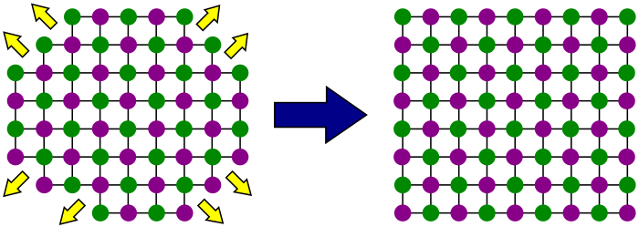
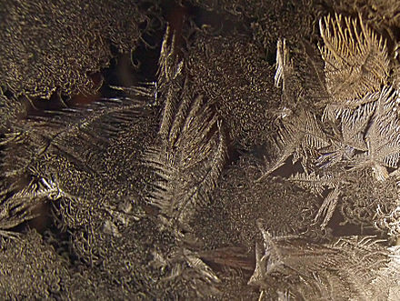

A crystal or crystalline solid is a solid material whose constituents (such as atoms, molecules, or ions) are arranged in a highly ordered microscopic structure, forming a crystal lattice that extends in all directions.[1][2] In addition, macroscopic single crystals are usually identifiable by their geometrical shape, consisting of flat faces with specific, characteristic orientations. The scientific study of crystals and crystal formation is known as crystallography. The process of crystal formation via mechanisms of crystal growth is called crystallization or solidification.

The word crystal derives from the Ancient Greek word κρύσταλλος (krustallos), meaning both "ice" and "rock crystal",[3] from κρύος (kruos), "icy cold, frost".[4][5]
Examples of large crystals include snowflakes, diamonds, and table salt. Most inorganic solids are not crystals but polycrystals, i.e. many microscopic crystals fused together into a single solid. Polycrystals include most metals, rocks, ceramics, and ice. A third category of solids is amorphous solids, where the atoms have no periodic structure whatsoever. Examples of amorphous solids include glass, wax, and many plastics.
Despite the name, lead crystal, crystal glass, and related products are not crystals, but rather types of glass, i.e. amorphous solids.
Crystals, or crystalline solids, are often used in pseudoscientific practices such as crystal therapy, and, along with gemstones, are sometimes associated with spellwork in Wiccan beliefs and related religious movements.[6][7][8]
Crystal structure (microscopic)
Main article: Crystal structure
The scientific definition of a "crystal" is based on the microscopic arrangement of atoms inside it, called the crystal structure. A crystal is a solid where the atoms form a periodic arrangement. (Quasicrystals are an exception, see below).

Not all solids are crystals. For example, when liquid water starts freezing, the phase change begins with small ice crystals that grow until they fuse, forming a polycrystalline structure. In the final block of ice, each of the small crystals (called "crystallites" or "grains") is a true crystal with a periodic arrangement of atoms, but the whole polycrystal does not have a periodic arrangement of atoms, because the periodic pattern is broken at the grain boundaries. Most macroscopic inorganic solids are polycrystalline, including almost all metals, ceramics, ice, rocks, etc. Solids that are neither crystalline nor polycrystalline, such as glass, are called amorphous solids, also called glassy, vitreous, or noncrystalline. These have no periodic order, even microscopically. There are distinct differences between crystalline solids and amorphous solids: most notably, the process of forming a glass does not release the latent heat of fusion, but forming a crystal does.
A crystal structure (an arrangement of atoms in a crystal) is characterized by its unit cell, a small imaginary box containing one or more atoms in a specific spatial arrangement. The unit cells are stacked in three-dimensional space to form the crystal.
The symmetry of a crystal is constrained by the requirement that the unit cells stack perfectly with no gaps. There are 219 possible crystal symmetries (230 is commonly cited, but this treats chiral equivalents as separate entities), called crystallographic space groups.[9] These are grouped into 7 crystal systems, such as cubic crystal system (where the crystals may form cubes or rectangular boxes, such as halite shown at right) or hexagonal crystal system (where the crystals may form hexagons, such as ordinary water ice).
Crystal faces and shapes
Crystals are commonly recognized, macroscopically, by their shape, consisting of flat faces with sharp angles. These shape characteristics are not necessary for a crystal—a crystal is scientifically defined by its microscopic atomic arrangement, not its macroscopic shape—but the characteristic macroscopic shape is often present and easy to see.
Euhedral crystals are those that have obvious, well-formed flat faces. Anhedral crystals do not, usually because the crystal is one grain in a polycrystalline solid.
The flat faces (also called facets) of a euhedral crystal are oriented in a specific way relative to the underlying atomic arrangement of the crystal: they are planes of relatively low Miller index.[10] This occurs because some surface orientations are more stable than others (lower surface energy). As a crystal grows, new atoms attach easily to the rougher and less stable parts of the surface, but less easily to the flat, stable surfaces. Therefore, the flat surfaces tend to grow larger and smoother, until the whole crystal surface consists of these plane surfaces. (See diagram on right.)
One of the oldest techniques in the science of crystallography consists of measuring the three-dimensional orientations of the faces of a crystal, and using them to infer the underlying crystal symmetry.
A crystal's crystallographic forms are sets of possible faces of the crystal that are related by one of the symmetries of the crystal. For example, crystals of galena often take the shape of cubes, and the six faces of the cube belong to a crystallographic form that displays one of the symmetries of the isometric crystal system. Galena also sometimes crystallizes as octahedrons, and the eight faces of the octahedron belong to another crystallographic form reflecting a different symmetry of the isometric system. A crystallographic form is described by placing the Miller indices of one of its faces within brackets. For example, the octahedral form is written as {111}, and the other faces in the form are implied by the symmetry of the crystal.
Forms may be closed, meaning that the form can completely enclose a volume of space, or open, meaning that it cannot. The cubic and octahedral forms are examples of closed forms. All the forms of the isometric system are closed, while all the forms of the monoclinic and triclinic crystal systems are open. A crystal's faces may all belong to the same closed form, or they may be a combination of multiple open or closed forms.[11]
A crystal's habit is its visible external shape. This is determined by the crystal structure (which restricts the possible facet orientations), the specific crystal chemistry and bonding (which may favor some facet types over others), and the conditions under which the crystal formed.
Occurrence in nature
Rocks
By volume and weight, the largest concentrations of crystals in the Earth are part of its solid bedrock. Crystals found in rocks typically range in size from a fraction of a millimetre to several centimetres across, although exceptionally large crystals are occasionally found. As of 1999, the world's largest known naturally occurring crystal is a crystal of beryl from Malakialina, Madagascar, 18 m (59 ft) long and 3.5 m (11 ft) in diameter, and weighing 380,000 kg (840,000 lb).[12]
Some crystals have formed by magmatic and metamorphic processes, giving origin to large masses of crystalline rock. The vast majority of igneous rocks are formed from molten magma and the degree of crystallization depends primarily on the conditions under which they solidified. Such rocks as granite, which have cooled very slowly and under great pressures, have completely crystallized; but many kinds of lava were poured out at the surface and cooled very rapidly, and in this latter group a small amount of amorphous or glassy matter is common. Other crystalline rocks, the metamorphic rocks such as marbles, mica-schists and quartzites, are recrystallized. This means that they were at first fragmental rocks like limestone, shale and sandstone and have never been in a molten condition nor entirely in solution, but the high temperature and pressure conditions of metamorphism have acted on them by erasing their original structures and inducing recrystallization in the solid state.[13]
Other rock crystals have formed out of precipitation from fluids, commonly water, to form druses or quartz veins. Evaporites such as halite, gypsum and some limestones have been deposited from aqueous solution, mostly owing to evaporation in arid climates.
IceWater-based ice in the form of snow, sea ice, and glaciers are common crystalline/polycrystalline structures on Earth and other planets.[14] A single snowflake is a single crystal or a collection of crystals,[15] while an ice cube is a polycrystal.[16
Organigenic crystals

Many living organisms are able to produce crystals, for example calcite and aragonite in the case of most molluscs or hydroxylapatite in the case of vertebrates.